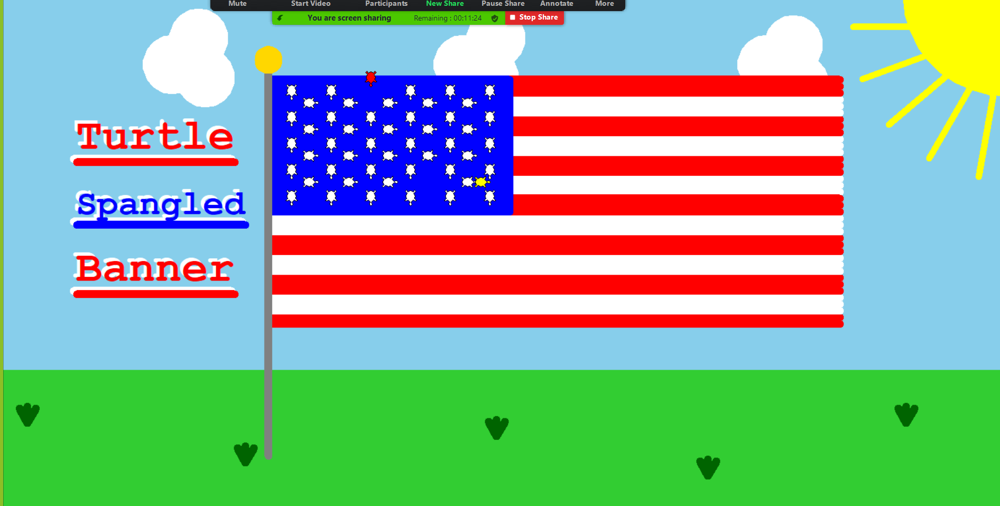

Home
Portfolio
About Me
Welcome to my portfolio page!
My first project was the "Turtle Spangled Banner". My group and I drew inspiration from the Star Spangled Banner in order to code a somewhat accurate replica.
We decided to go with turtles instead of the stars to incorparate what we had been working on for the past week. We decided to tell a story with out movement.
The red turtle at the top of the Turtle Spangled Banner represents a teacher turning his back to the class while the mischevious yellow turtles (the students)
pass a note around the classroom. We finalized the project by giving our centerpiece a fitting background that included a simple sun and straightforward
backdrop.

My second project was "Firefighter". The basis of the game is centered aroun the pythagorean theorem. You are given the height and length you, the firefighter,
are away from the building and are tasked with giving the correct hypotenuse. That answer will determine how far the water will shoot and ultimately determine
whether or not you put out the fire.